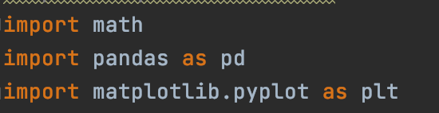
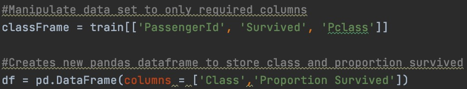
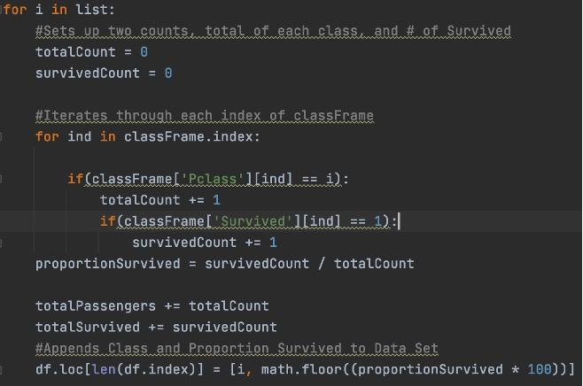
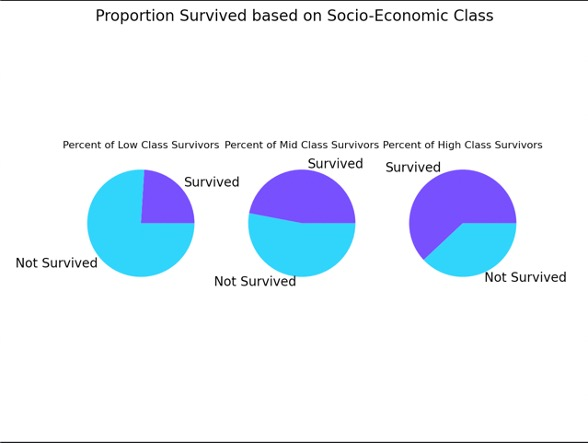

Socio-Economical Analysis of Titanic Survivors
For this project, my goal was to read, clean, analyze, and visualize the data entirely in python. I did this through the use of the libraries Pandas and MatPlotLib.
These lines quickly clean the data to filter out any unnecessary columns for this project.

In this for loop, I iterate through each class, [1, 2, 3] and calculate the percent survived for each one. Later, I will use these percents for visualization.
Using MatPlotLib my script creates a pie chart for each socio-economic class provided by the data. I create each of these as subplots within one plot which allows the plots to be contained entirely in one window.

The output to the right shows what exactly is generated by MatPlotLib.
As can easily be viewed, as Socio-Economic Class increases,
so does the survival rate.

However, seeing this correlation is not enough to claim statistical significance. That is why at the end of my script, I have created a statistical hypothesis test to determine whether we can conclude that on the titanic, those of higher socioeconomic status have a higher chance of survival.
Conclusion:
After running the hypothesis test, our script can conclude that the findings are statistically significant. If you were of higher socioeconomic status and on the titanic, you have a statistically significantly higher chance of survival.
Github Link: